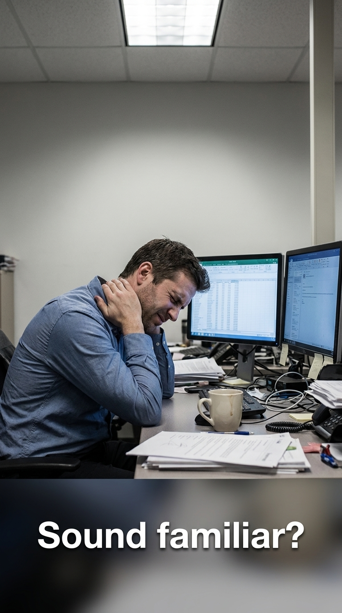
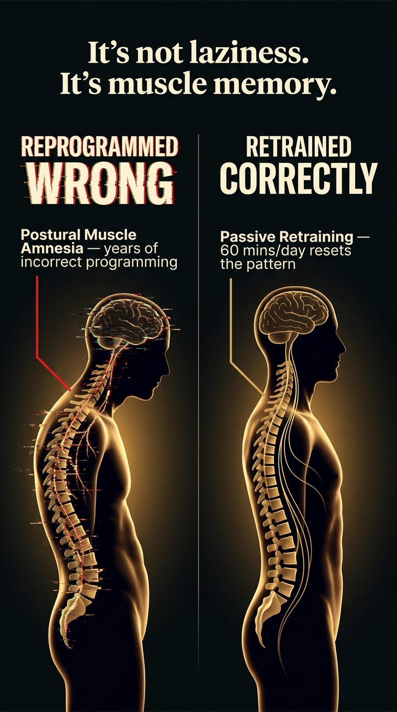
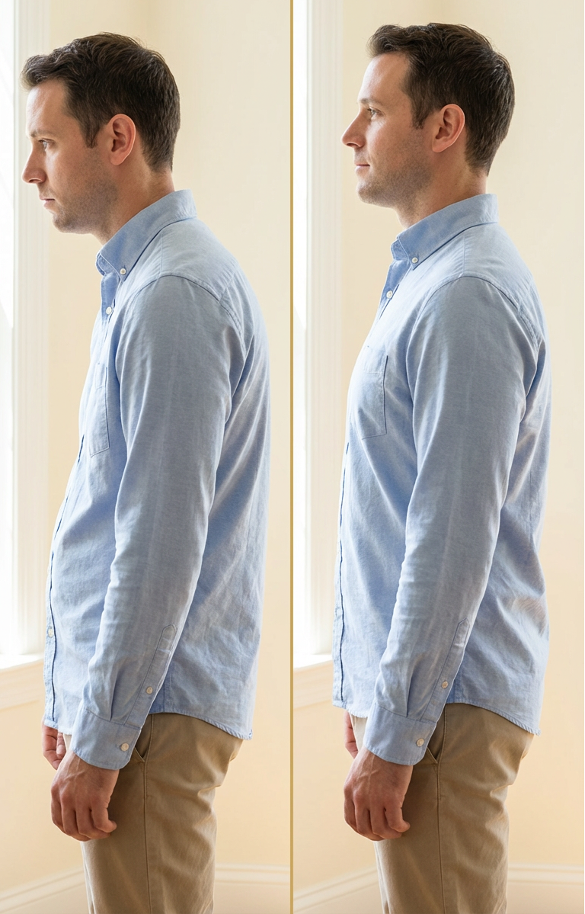
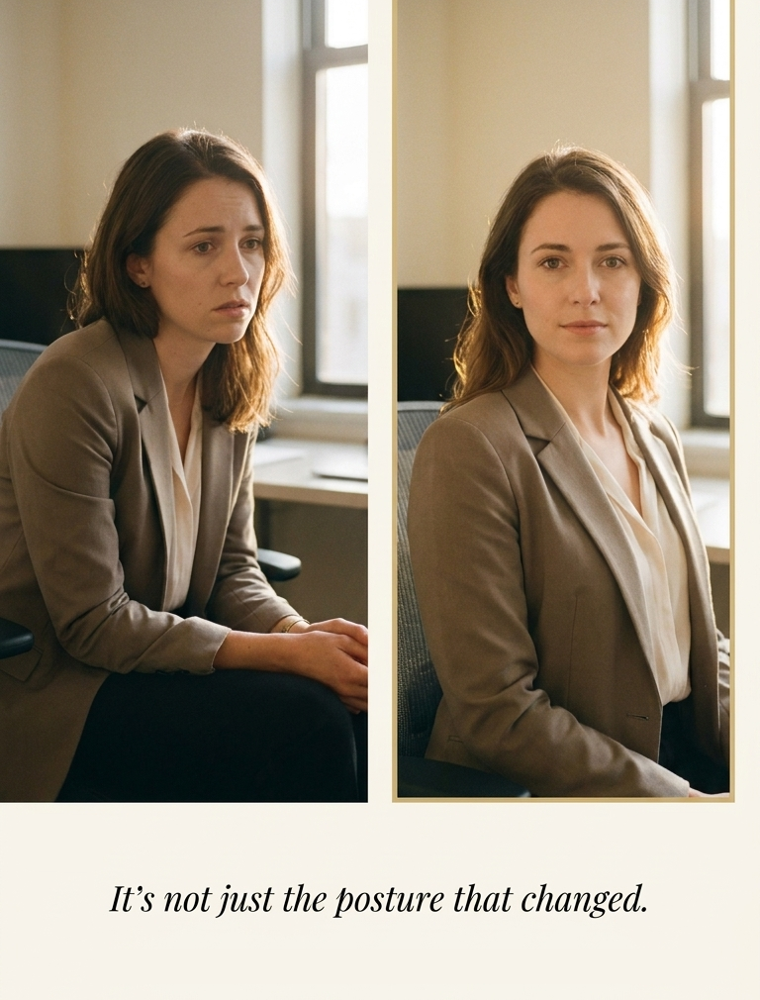
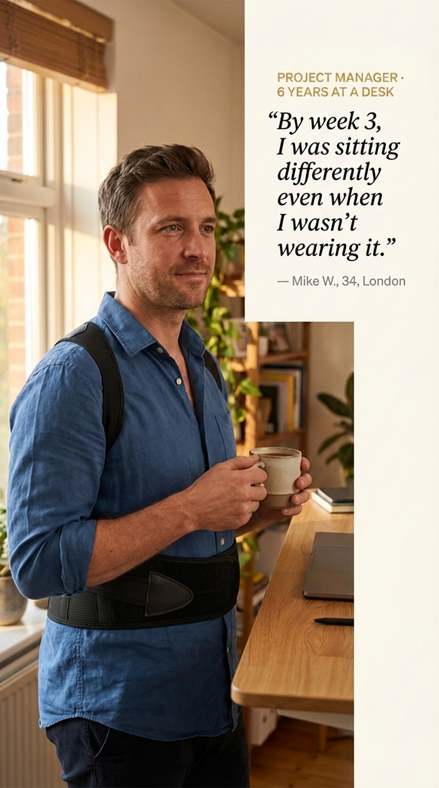

I Spent $3,200 Trying to Fix My Posture.
Then I found out why nothing was ever going to work.
Six years of chiropractors, braces, and YouTube routines — all useless. A physio finally explained the real problem in one sentence.

Let me start with a number: $3,247.
That's what I spent over six years trying to fix my posture. Chiropractor visits. A standing desk I used twice. Three Amazon braces I returned. YouTube stretch routines I quit by day four.
None of it worked. Not for long, anyway.
I'm 34. I've been at a desk 9 hours a day since I was 26. And for most of that time, I blamed myself. Not enough willpower. Not consistent enough. If I just tried harder, it would work.
Then a physio said something that changed everything. One sentence. And suddenly six years of failure made complete sense.
"Your muscles haven't just weakened. They've been reprogrammed into the wrong position. Willpower can't override thousands of hours of physical conditioning."
— The physio appointment that changed everythingI asked the obvious follow-up: So what actually fixes it?
The answer was simpler than I expected. But first — here's what I wish I'd known before I wasted all that money.
Your desk job literally reprogrammed your muscles. It's not laziness.
When you sit hunched for 8–10 hours a day, year after year, your body adapts. It learns what position you spend the most time in — and starts treating that as normal.
Researchers call it postural muscle conditioning. I think of it as Muscle Amnesia — your muscles forget where they're supposed to be.

Why "just sit up straight" stops working after about 4 minutes.
This is why "just sit up straight" doesn't stick. The moment you stop thinking about it — about 4 minutes later — your body snaps right back to its default. Not because you're weak. Because your nervous system is doing exactly what it was trained to do.
This is not a discipline problem. It's a reprogramming problem. And those need very different solutions.
Chiropractors and exercises treat the symptom. Not the cause.
Chiro sessions helped — for about 48 hours. Then I'd sit back at my desk and within a week, everything was the same as before. I'd go back, pay another $95, feel better for two days. Repeat until I'd spent over $800.
Same with stretching. It relieved the tension. But it never changed the underlying pattern — the default my muscles kept snapping back to.
Every solution I tried required me to actively fight my body's default. But you can't correct your posture consciously for 8 hours a day. You'd never get anything done.
I didn't need something that temporarily relieved the tension. I needed something that would change the default position itself — while I got on with my day.
- Chiropractor — relief lasts 1–2 days, body returns to same pattern
- Stretch routines — work in the moment, can't do them all day
- Foam rollers — treat the symptom, not the root cause
- Standing desks — great if you actually stand. Most people don't.
- Cheap braces worn all day — can actually weaken muscles further
The real fix is passive retraining. 60 minutes a day is enough.

Once I understood Muscle Amnesia, the solution followed naturally. If the wrong position was learned through thousands of hours of repetition, the right position needs to be taught the same way — passively, consistently, until the nervous system accepts it as the new normal.
Think of it like a broken bone. You don't fix a fracture with willpower. You put a cast on it and let it heal in the correct position. Nobody thinks you're weak for wearing a cast.
The physio's advice: don't try to sit up straight. Instead, passively hold the correct position for 60–90 minutes a day until your muscles learn it on their own.
The product that helped me apply this method is called PosturePro. 60–90 minutes a day. No exercises. No appointments. I'll tell you exactly what happened below.
→ See PosturePro — 50% Off TodayMost braces make things worse — unless you use them this way.
My first two Amazon braces? One dug into my armpits and left marks. The other made me sweat constantly. Both returned within a week.
But there was also a bigger problem: I was wearing them all day, every day. That approach actually makes your muscles more dependent, not less. The brace does all the work and your muscles switch off.
| Feature | ✦ PosturePro | Typical Brace |
| 60–90 min retraining method | ✓ | ✕ |
| Trains muscles (not replaces them) | ✓ | ✕ |
| Upper + lower back support | ✓ | ✕ |
| Invisible under a work shirt | ✓ | ✕ |
| No armpit digging | ✓ | ✕ |
| Breathable — no sweating | ✓ | ✕ |
| Easy to put on alone | ✓ | ✕ |
The method that actually works: short, daily sessions — 60 to 90 minutes, not all day. Long enough to trigger retraining. Short enough that your muscles stay active and get stronger.
- Start at 30 mins/day, add 10 mins every few days
- Wear during a consistent daily block — morning works best
- After 30 days, reduce wear time — muscles should hold it themselves
The change you won't expect: it's bigger than the back pain.

The change most people notice first isn't the back pain. It's how they carry themselves.
By week three, something happened I wasn't expecting. I was in a team meeting and a colleague said: "You seem really on today."
I'd been sitting differently for about 10 days. The neck pain had dropped a lot. But the comment wasn't about pain. It was about how I was showing up.
The research backs this up: posture directly affects how you come across — and how you feel inside. When you carry yourself upright, your brain registers it as confidence. When you're collapsed forward, it registers that too.
"The back pain improved more than I expected. But honestly, that became secondary. The real change is how I walk into a room now."
— Mike W., 34, London · Project ManagerBy day 30, I was sitting upright even when not wearing the brace. The neck tension I'd been managing for years had noticeably eased. But the bigger shift was this quiet sense of just… being comfortable in my own body. Not thinking about how I was sitting. Not wondering if I looked tired.

Standing in the kitchen. Walking into a meeting. Catching my reflection and not immediately looking away.
The posture fixed. The confidence came with it. That one I didn't see coming.
"Walk into every room like you belong there." — the result nobody talks about.
PosturePro — my honest take.
I was skeptical. I'd already returned two braces. But the framing was different: not "wear this all day," but "60–90 minutes, passively retrain your muscles." That made sense to me.
A few things that surprised me:
- Actually comfortable — no digging, no sweating, nothing like the ones I returned
- Fits invisibly under a regular work shirt — I forgot I had it on during a video call
- Supports upper AND lower back at the same time — most braces only do one
- 30-day money-back, no return shipping — there's no real risk in trying it

Week 4. He stopped noticing he was wearing it.
Honestly? I wish I'd spent $44 on this four years ago instead of $3,200 on everything else. Not because it's magic. But because it's the first thing I tried that was solving the actual problem.
Try PosturePro Free for 30 Days
60–90 minutes a day. No exercises. No appointments.
If it doesn't work — full refund. No return shipping needed.